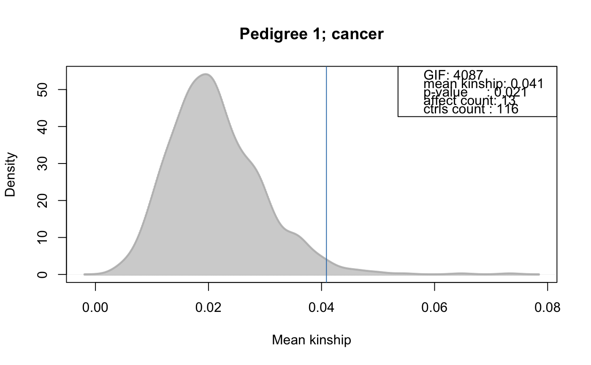
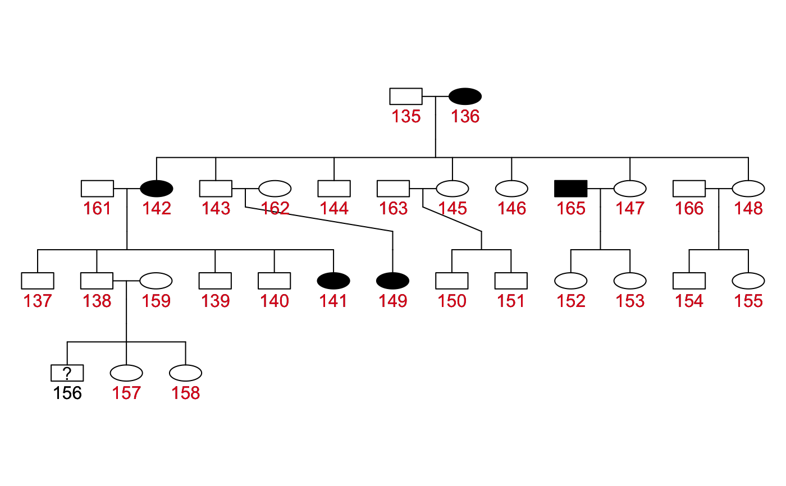
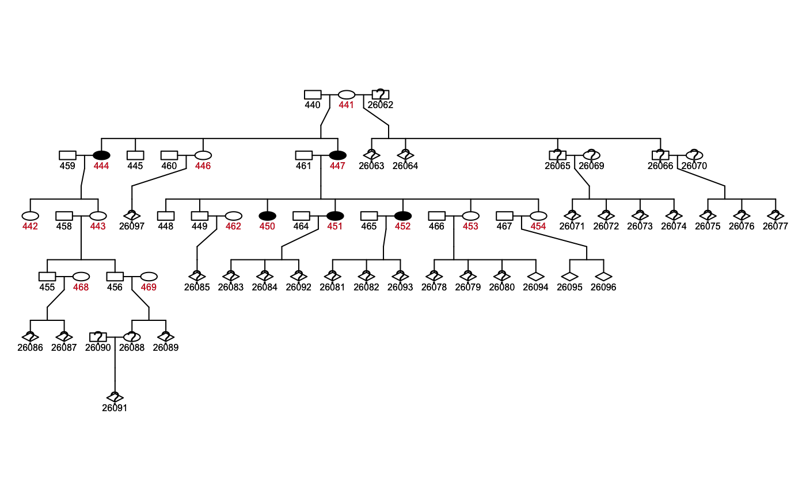
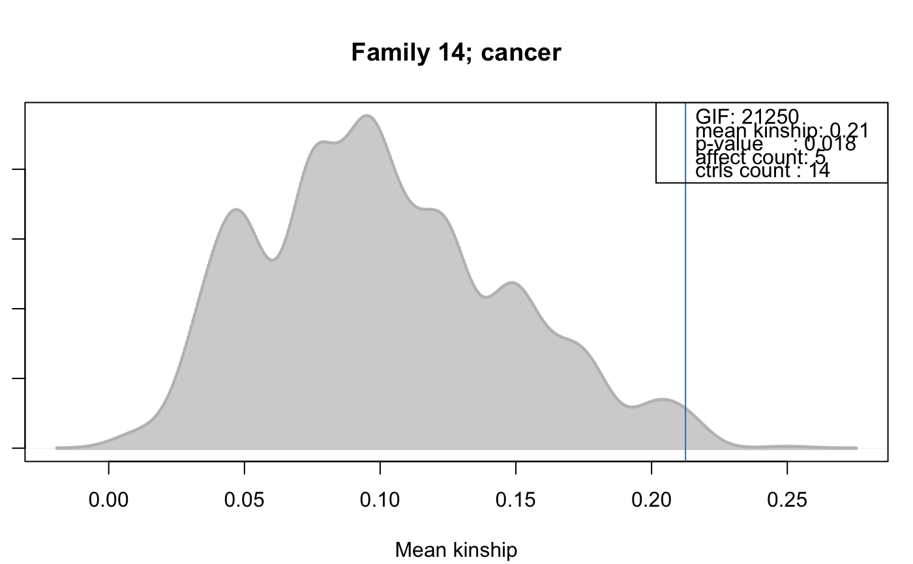

FAGenIndexResults.RdThe genealogical index [Hill, 1980], also referred to as the genealogical index of familiality (GIF) in the literature, is a method to identify familial clustering of diseases or other traits. For a given trait, the method computes the mean kinship between affected in the whole pedigree along with mean kinships of randomly drawn sets of individuals. The distribution of average kinship values among the control sets is used to estimate the probability that the observed level of kinship among the cases is due to chance.
# S4 method for FAGenIndexResults plotPed(object, id=NULL, family=NULL, filename=NULL, device="plot", ...) # S4 method for FAGenIndexResults plotRes(object, id=NULL, family=NULL, addLegend=TRUE, type="density", ...) # S4 method for FAGenIndexResults result(object, method="BH") # S4 method for FAGenIndexResults runSimulation(object, nsim=50000, perFamilyTest=FALSE, controlSetMethod="getAll", rm.singletons=TRUE, strata=NULL, ...) # S4 method for FAGenIndexResults trait(object) <- value
| addLegend | For |
|---|---|
| controlSetMethod | For |
| device | For |
| family | For |
| filename | For |
| id | For |
| method | The multiple hypothesis testing method. All methods supported by
|
| nsim | Number of simulations. |
| perFamilyTest | For |
| rm.singletons | For |
| object | The |
| strata | For |
| type | For |
| value | For |
| ... | For For |
This implementation differs from the original method from Hill as it
allows, in addition to perform per family analyses, to use also
stratified sampling and allows a more flexible definition of the set
of matched control individuals.
The controlSetMethod parameter allows to specify a method to
define the matched control set (e.g. matched by sex or matched by any
externally provided vector).
Stratified sampling allows to even further fine tune the selection of
matched controls. Assuming that in a pedigree the group of affected
consists of 5 females and 3 male individuals, passing the sex of all
individuals to the function (e.g. strata=fad$sex, with
fad being the FAData object containing the
pedigree to be analyzed) results in random sets with the same
proportion of male/female individuals (i.e. 5 females, 3 males).
Note that, if strata is specified, all individuals with a
missing value in strata (also affected individuals) are
excluded from the analysis.
Note that by default singletons (i.e. unconnected individuals in
the pedigree) are removed from the pedigree prior the
analysis. Set rm.singletons=FALSE if you do not want them
to be removed.
By default, the genealogical index is calculated on the whole
pedigree, but it is also possible to evaluate within-family clustering
of cases by specifying perFamilyTest=TRUE. In that case, it is
also possible to use the getGenerationMatched and
getGenerationSexMatched functions to define the set of
matched controls from which random samples will be taken.
A call to the setter methods trait<- resets any simulation
results present in the sim slot, thus, the object can be
re-used to perform a simulation analysis using the new trait data.
FAGenIndexResults objects are created calling the
genealogicalIndexTest method on a
FAData object.
Class FAData directly.
A character specifying the name of the method used to define the set of control individuals from which random samples were taken.
Number of simulations.
Logical indicating whether a per-family test was performed.
The result of the simulation. This slot should not be accessed
directly, use the result method to extract result information.
id) is highlighted in red.
See plotPed for more details.
plotRes
Plots the results from a genealogical index simulation
analysis. The distribution of the mean kinship values of the
randomly drawn controls are displayed as a grey density plot, the
observed mean kinship value of all affected as a blue vertical
line.
Returns the result from the simulation as a data.frame with
columns:
"trait_name": the name of the trait.
"total_phenotyped": total number of individuals in the
pedigree phenotyped in the analyzed trait.
"total_affected": total number ofindividuals in the
pedigree that are affected in the analyzed trait (i.e. number of
cases).
"entity_id": the id for the analyzed entity, being either
the whole pedigree (in which case the id will be "1") or
the id of the family (if perFamilyTest=TRUE).
"entity_ctrls": the number of (matched) control individuals
from which the random samples were drawn.
"entity_affected": the number of affected individuals in
the entity. This number can differ from the number of affected, if
strata was specified and some of the affected have a
missing value in strata.
"genealogical_index": the genealogical index of familiality
(gif), i.e. the mean kinship value between all affected in the
entity (pedigree or family). To be consistent with the original
implementations, the genealogical index is the mean kinship
multiplied with 100000.
"pvalue": the p-value for the significance of the mean
kinship.
"padj": the p-value adjusted for multiple hypothesis
testing (with the method specified with argument method). The returned data.frame is sorted by column
"pvalue", its rownames correspond to column
"entity_id".
Performs the simulation analysis based on the pedigree and trait
information stored in the object. Returns a
FAGenIndexResults object with the results of the simulation.
Set the trait information. This method will reset all simulation
results saved in the sim slot.
Subsetting (using the [ operator) is not supported.
Refer to the method and function description above for detailed information on the returned result object.
Hill, J. R. (1980) A survey of cancer sites by kinship in the Utah Mormon population. In Cairns J, Lyon JL, Skolnick M (eds): Cancer Incidence in Defined Populations. Banbury Report 4. Cold Spring Harbor, NY: Cold Spring Harbor Laboratory Press, pp 299--318.
FAData,
trait,
probabilityTest,
kinshipGroupTest,
kinshipSumTest,
familialIncidenceRateTest,
fsirTest,
plotPed
########################## ## ## Perform the simulation analysis ## ## Load the Minnesota Breast Cancer data set. data(minnbreast) ## Subset to some families and generate a pedigree data.frame mbsub <- minnbreast[minnbreast$famid == 4 | minnbreast$famid == 14 | minnbreast$famid == 6 | minnbreast$famid == 8, ] PedDf <- mbsub[, c("famid", "id", "fatherid", "motherid", "sex")] colnames(PedDf) <- c("family", "id", "father", "mother", "sex") ## Generate the FAData. fad <- FAData(pedigree=PedDf)#>#>## Specify the trait. tcancer <- mbsub$cancer names(tcancer) <- mbsub$id ## Perform the test with default settings, i.e. use all individuals ## in the pedigree as control set from which random samples are drawn ## and perform the analysis on the whole pedigree. gi <- genealogicalIndexTest(fad, trait=tcancer, traitName="cancer", nsim=1000,)#>#>#>#>#>#>## Just show some information gi#> FAGenIndexResults object with: #> * Pedigree of length 194. #> * Number of unique individuals: 194. #> * Number of families: 4. #> * Number of individuals in largest family: 70. #> * Number of individuals in smallest family: 40. #> Information on trait 'cancer' #> * Number of non-NA values: 138. #> * Number of non-zero values: 15. #> Result info: #> * Dimension of result data.frame: 1. #> * Number of simulations: 1000. #> * Method for control set definition: getAll. #> * Analysis performed for the whole pedigree.#> trait_name total_phenotyped total_affected entity_id entity_ctrls #> 1 cancer 138 15 1 116 #> entity_affected genealogical_index pvalue padj #> 1 13 4086.538 0.021 0.021## Plot the observed mean kinship and the distribution of the mean kinship of ## random samples. plotRes(gi)## Plot the pedigree for one of the families. All individuals ## used as matched control set are highlighted in red. plotPed(gi, family="8")#> Warning: The genealogical index test has been performed on the full pedigree, but the plot was only generated for family 8!#> Warning: Not all probands specified in proband.id are in the pedigree!#> Did not plot the following people: 160 164 167 168 169 170 171 172 173 174## Repeat the analysis using the sex as strata. This will result in stratified ## random sampling with the number of female and male individuals selected in ## each permutation corresponding to the numbers below table(gi$sex[affectedIndividuals(gi)])#> #> M F #> 2 13#>#>#>#>#>#>#>#>#>#>result(giStrata)#> trait_name total_phenotyped total_affected entity_id entity_ctrls #> 1 cancer 138 15 1 113 #> entity_affected genealogical_index pvalue padj #> 1 13 4086.538 0.032 0.032## Alternatively, we can use "getSexMatched" as the function to define the set ## of control individuals. Just, in the present case both male and females ## individuals will be selected since also there are male and female individuals ## among the affected cases. giPerFam <- runSimulation(gi, nsim=1000, controlSetMethod="getSexMatched", perFamilyTest=TRUE)#>#>#>#>#>#>#>#> Warning: Can not perform test for family 6: less than 2 affected individuals in the trait.#>#>#>#>#>#>#>#>#> Warning: The proportion of affected individuals among the matched controls is > 25% in family 14.result(giPerFam)#> trait_name total_phenotyped total_affected entity_id entity_ctrls #> 14 cancer 138 15 14 14 #> 4 cancer 138 15 4 29 #> 8 cancer 138 15 8 29 #> 6 cancer 138 15 6 1 #> entity_affected genealogical_index pvalue padj #> 14 5 21250 0.018 0.054 #> 4 2 12500 0.396 0.490 #> 8 5 9375 0.490 0.490 #> 6 1 NA NA NA## For those families in which there are only female cases, random samples ## were drawn among only female individuals (within the same family). These ## are highlighted in red in the pedigree plot: plotPed(giPerFam, family="14", cex=0.5)#> Warning: More than 25% of the gender values are 'unknown'#> Did not plot the following people: 457 463 470 471 26067 26068 26098 26099## Plot the simulation result for this family: plotRes(giPerFam, family="14")